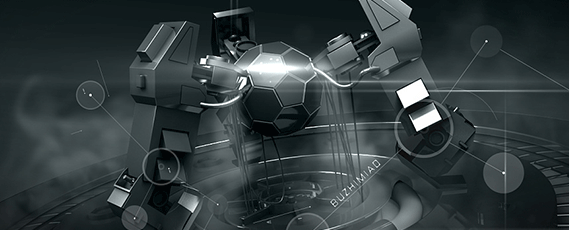

产品中心
利恩设计和制造的自助服务终端设备累积出货量已达2万台以上，主要应用于银行、影院、交通、医院、便利店和社区等行业或领域。
行业解决方案
深圳利恩是一家自助服务终端设备/解决方案供应商，以及一家杰出的走在自助服务终端改革前沿阵地的全球化公司
关于我们
我们是一家自助服务终端设备/解决方案供应商
深圳利恩信息技术股份有限公司
深圳市利恩智能科技有限公司（以下简称“利恩”）是隶属于深圳市利恩信息技术股份有限公司下的全资子公司，是一家自助服务终端开发设计和制造商，以及一家杰出的走在自助服务终端改革前沿阵地的全球化公司。我们为全球超过30个国家的地区的客户设计和开发了广泛的高质量自助服务终端解决方案，促进了自助服务终端在不同的行业的应用。
以我们多年的经验和能力积累，全力以赴，帮助您实现商业成功！
新闻资讯
这里提供利恩的最新动态

智能终端产业的未来发展战略
自2010年苹果iPhone 4和iPad发布以来，以智能手机、平板电脑、电子阅读器等为代表的智能移动终端产业呈现井喷式增长。其中，智能移动手机更是夺得头把交椅，普及率急速上升。随着千元智能手机的成熟和批量上市，一场颠覆式的洗牌蓄势待发。
查看更多